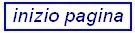

Un hyperlink è un collegamento tra una risorsa Web e un'altra. Sebbene si tratti di un concetto semplice, costituisce uno dei punti di forza del successo del Web.
Un collegamento ha due terminali, chiamati ancore, e una direzione, dalla risorsa sorgente a quella di destinazione.
Il comportamento di default di un collegamento, ottenibile selezionandolo mediante, ad esempio, il mouse, consiste nel recuperare e presentare la risorsa Web indicata dall'URI, che è a sua volta contenuto nell'ancora sorgente.
Ogni risorsa Web viene identificata univocamente per mezzo di un Uniform (o Universal) Resource Identifier (URI). Gli URI sono composti da tre parti, separate da /:
type://<hostname>[:port]/<path>
Il seguente URI:
http://www.ing.unipi.it/TIA/index.html
viene interpretato come la richiesta di recuperare, usando il protocollo HTTP, un documento HTML, accessibile attraverso il percorso /TIA sul server avente indirizzo simbolico www.ing.unipi.it.
Altri possibili protocolli sono:
ftp:// news:// telnet://
file:// gopher:// mailto:
Gli URI possono essere assoluti (o completi), come quelli mostrati precedentemente, oppure relativi.
Gli URI relativi si riferiscono a documenti residenti sul server di origine del documento corrente, e possono avere riferimenti relativi anche nella componente percorso. Vengono risolti in URI completi usando un URI di base.
Per inserire un collegamento ipertestuale in un documento Web si usa l'elemento ancora, delimitato dal tag <a>. L'attributo href specifica l'URI del documento di destinazione:
<a href="www.ing.unipi.it/ing_inf/index.html">link</a>
Nella pagina verrà visualizzata l'ancora, costituita in questo
caso dal testo compreso fra i tag,
sottolineato e in colore diverso. Il contenuto dell'elemento ancora
può essere un altro elemento, ad esempio un'immagine:
<a href="www.pippo.com"><img src="./pippo.jpg"></a>
Selezionando l'ancora si comunica al browser la nostra intenzione di seguire il collegamento.
Omettendo hostname il documento di destinazione è nello stesso server del documento sorgente:
/ing_inf/index.html
Il percorso può essere relativo: . indica la directory del documento sorgente (quello in cui compare l'ancora sorgente), . . la directory padre.
E' bene usare percorsi relativi per facilitare la pubblicazione dell'albero dei documenti sul server.
Con riferimento al frammento di file system illustrato sotto, per inserire nel documento a.html un collegamneto a index1.html useremo:
./users/elisa/index1.html
Mentre per inserire in index1.html un collegamneto alla risorsa b.gif useremo:
../../image/b.gif
I collegamenti interni permettono di spostarsi su frammenti diversi dello stesso documento. Un esempio di utilizzo è quello di mettere un collegamneto in fondo alla pagina per tornare all'inizio. La sintassi è:
<a href="#inizio">torna in cima</a>
Chiaramente dovremo definire l'ancora di destinazione, usando un elemento ancora con l'attributo name:
<a name="inizio">inizio pagina</a>
Si può usare lo stesso mecanismo anche per posizionarsi in un determinato frammento di in una pagina diversa:
<a href="./altra.html#mezzo">link</a>
Aprirà la pagina altra.html nella posizione indicata da:
<a name="mezzo">metà pagina</a>
<html>
<head>
<title> Collegamenti interni: </title>
</head>
<body>
<a name="inizio">inizio pagina</a>
1<br>2<br>3<br>
4<br>5<br>6<br>
7<br>8<br>9<br>
10<br>11<br>12<br>
13<br>14<br>15<br>
16<br>17<br>18<br>
19<br>20<br>21<br>
22<br>23<br>24<br>
25<br>26<br>27<br>
28<br>29<br>30<br>
31<br>32<br>33<br>
34<br>35<br>36<br>
37<br>38<br>39<br>
<a href="#inizio" >vai all'inizio della pagina</a>
</body>
</html>
Un'ancora particolare che si incontra frequentemente
nelle pagine web è quella relativa ad un indirizzo di posta
elettronica.
La sintassi è la seguente:
<a href="mailto:nome.utente@provider.it">e-mail</a>
| |
 | |